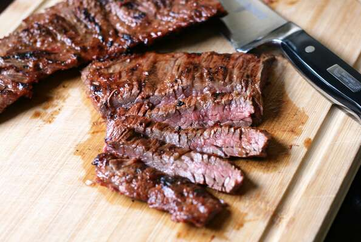

Asian Barbequed Steak

Description
Thai flavors combine to make one phenomenal steak!
Flank steak is our favorite, but it's also great for other cuts of meat.
It's great with grilled veggies, and perfect for salads and sandwiches.
Ingredients
- ¼ cup chili sauce
- ¼ cup fish sauce
- 1½ tablespoons dark sesame oil
- 1 tablespoon grated fresh ginger root
- 3 cloves garlic, peeled and crushed
- 1/2 pound shredded Cheddar cheese
- 2 pounds flank steak
Steps
- In a medium bowl, whisk together chili sauce, fish sauce, sesame oil, ginger, and garlic.
Set aside a few tablespoons of the mixture for brushing the steaks during grilling.
Score flank steak and place in a shallow dish.
Pour remaining marinade over the steak, and turn to coat.
Cover, and marinate in the refrigerator at least 3 hours.
-
Preheat an outdoor grill for high heat.
-
Lightly brush the grilling surface with oil.
Grill steak 5 minutes per side, or to desired doneness, brushing frequently with the reserved marinade mixture.